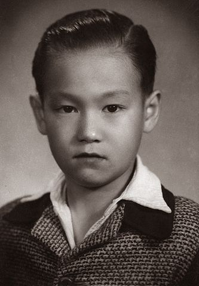

BRUCE LEE
THE DRAGON
Lee in one of his famous movies-ENTER THE DRAGON.
This page is about the biography and pholosophies of Bruce Lee.
Bruce Lee’s philosophies have inspired millions of people the world over. He was a diligent journaler and made copious notes on his thoughts and ideas on how to live life to its fullest as well as on his martial expression. Bruce Lee also lived his philosophies believing that philosophies are meant to be applied not just pondered. Though his philosophies are numerous, there are several that are core to his outlook on life and martial arts. Many books on his philosophical thoughts and the inspirational way he lived his life have been published posthumously.
Empty your mind. Be formless, shapeless, like water. You put water into a cup, it becomes the cup. You put water into a bottle, it becomes the bottle. You put it into a teapot, it becomes the teapot. Now water can flow or it can crash. Be water, my friend.
Lee Siu Loong was born in 1940 in San Francisco, CA while his parents were on tour with the Chinese Opera. Ultimately raised in Hong Kong, Bruce Lee was a child actor appearing in more than 20 films. At the age of 13, Bruce took up the study of wing chun gung fu under renowned wing chun master, Yip Man.
Bruce left Hong Kong at the age of 18, came to the United States and made his way to Seattle, Washington where he worked in the restaurant of a family friend. He soon enrolled in the University of Washington where he pursued a degree in philosophy. Bruce began to teach gung fu in Seattle and soon opened his first school, the Jun Fan Gung Fu Institute. Two more schools followed in Oakland and Los Angeles. Concurrently Bruce married his wife, Linda and had his two children, Brandon and Shannon. In the mid sixties, Bruce was discovered while doing an exhibition at the Long Beach Internationals and a role as Kato in the tv series The Green Hornet soon followed. During this time, Bruce was also developing his own martial art, which he ultimately named Jeet Kune Do.(translated: the way of the intercepting fist).
Knowing is not enough, we must apply. Willing is not enough, we must do.
Always be yourself,express yourself, have faith in yourself!
Using no way as way; having no limitation as limitation
To change with change is the changeless state.
Lee believed that individuals, societies and culturesneed to change with change. The world is changing quickly and we want to do what we can to help it be for the better. To spark positive change and growth, there is much work and healing to be done.
Bruce Lee was an ally of humanity and believed that if everyone helped his neighbor, no one would be without help.
Resources on Bruce Lee's Philosophies:
- Lee Wisdom for the Way
- Bruce Lee Artist of Life
- Bruce Lee Striking Thoughts
- Bruce Lee: The Tao of Gung Fu
You should read more about this incredible human.
Check his Website.